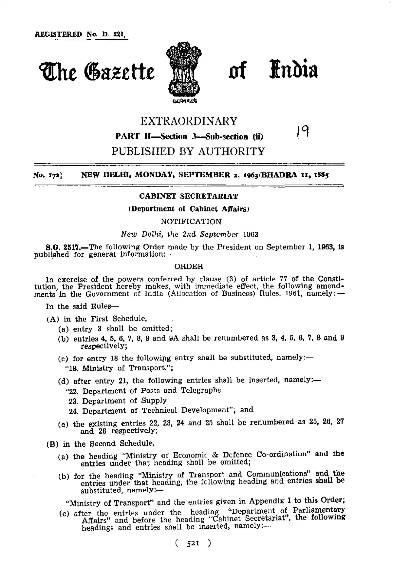
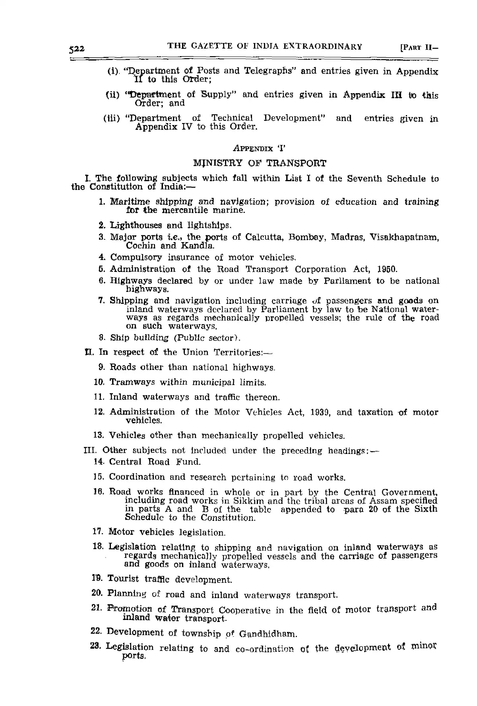
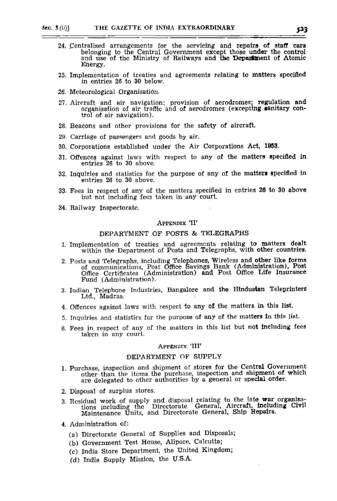
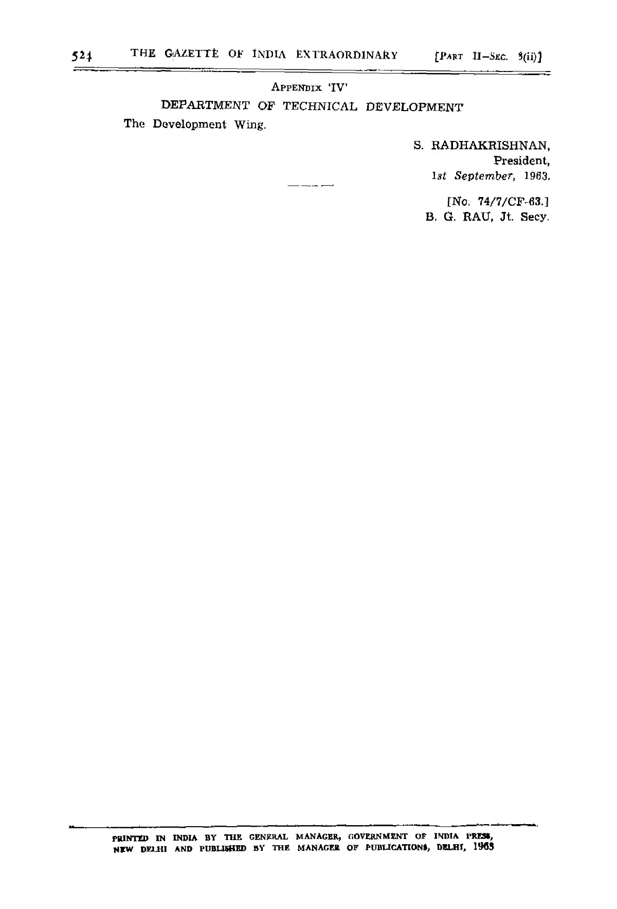

Amendment #19 (S.O. 2517, 1963)
19 changes: 14 to the First Schedule, 5 to the Second Schedule. 19 applied
What it did to the ministries
- bornDepartment of Technical Development is created (0 subjects) change 10, 17, 18, 19 · histories: Technical Development
- spun offDepartment of Posts and Telegraphs is separated from Ministry of Transport & Communications (6 subjects) change 9, 10, 16 · histories: Transport, Communications
- renamedMinistry of Transport & Communications is renamed Ministry of Transport change 9, 16 · histories: Transport
- renamedMinistry of Economic and Defence Co-ordination is renamed Department of Supply change 1, 2, 10, 15 · histories: Supply
- shrankDepartment of Supply shrinks from 7 to 4 subjects change 1, 2, 10, 15 · histories: Supply
The order, page by page
Page 1 of 4

12345678910111213141516Schedule 1 › entry 3
applied at schedule 1 › ministry 3 in the Rules after #19
Schedule 1 › entry 18
- 18. Ministry of Transport.
applied at schedule 1 › ministry 18 in the Rules after #19
read hindi missing
after Schedule 1 › entry 21
- 22. Department of Posts and Telegraphs
- 23. Department of Supply
- 24. Department of Technical Development
applied at schedule 1 › department 22 in the Rules after #19
read hindi missing
Schedule 2 › Ministry of Economic & Defence Co-ordination
applied at schedule 2 › ministry in the Rules after #19
Schedule 2 › Ministry of Transport and Communications
- MĮNISTRY OF TRANSPORT
- I. The following subjects which fall within List I of the Seventh Schedule to the Constitution of India:- ---
- 1. Maritime shipping and navigation; provision of education and training for the mercantile marine.
- 2. Lighthouses and lightships.
- 3. Major ports i.e., the ports of Calcutta, Bombay, Madras, Visakhapatnam Cochin and Kandſa.
- 4. Compulsory insurance of motor vehicles.
and 32 more
- 5. Administration of the Road Transport Corporation Act, 1950.
- 6. Highways declared by or under law made by Parliament to be national highways.
- 7. Shipping and navigation including carriage of passengers and goods on inland waterways declared by Parliament by law to be National waterways as regards mechanically propelled vessels; the rule of the road on such waterways.
- 8. Ship building (Public sector).
- II. In respect of the Union Territories:—
- 9. Roads other than national highways.
- 10. Tramways within municipal limits.
- 11. Inland waterways and traffic thereon.
- 12. Administration of the Motor Vehicles Act, 1939, and taxation of motor vehicles.
- 13. Vehicles other than mechanically propelled vehicles.
- III. Other subjects not included under the preceding headings:—
- 14. Central Road Fund.
- 15. Coordination and research pertaining to road works.
- 16. Road works financed in whole or in part by the Central Government including road works in Sikkim and the tribal arcas of Assam specified in parts A and B of the table appended to para 20 of the Sixth Schedule to the Constitution.
- 17. Motor vehicles legislation.
- 18. Legislation relating to shipping and navigation on inland waterways as regards mechanically propelled vessels and the carriage of passengers and goods on inland waterways.
- 19. Tourist traffic development.
- 20. Planning of road and inland waterways transport.
- 21. Promotion of Transport Cooperative in the field of motor transport and inland water transport.
- 22. Development of township of Gandhidham.
- 23. Legislation relating to and co-ordination of the development of minor ports. SEC. $ (ii)]
- 24. Centralised arrangements for the servicing and repairs of staff cars belonging to the Central Government except those under the control and use of the Ministry of Railways and the Department of Atomic Energy.
- 25. Implementation of treaties and agreements relating to matters specified in entries 26 to 30 below.
- 26. Meteorological Organisation.
- 27. Aircraft and air navigation; provision of aerodromes; regulation and organisation of air traffic and of aerodromes (excepting sanitary control of air navigation).
- 28. Beacons and other provisions for the safety of aircraft.
- 29. Carrlage of passengers and goods by air.
- 30. Corporations established under the Air Corporations Act, 1953.
- 31. Offences against laws with respect to any of the matters specified in entries 26 to 30 above.
- 32. Inquiries and statistics for the purpose of any of the matters specified in entries 26 to 30 above.
- 33. Fees in respect of any of the matters specified in entries 26 to 30 above but not including fees taken in any court.
- 34. Railway Inspectorate.
applied at schedule 2 › ministry MINISTRY OF TRANSPORT & COMMUNICATIONS in the Rules after #19
read hindi missing, read page break
Page 2 of 4

171819after Schedule 2 › Department of Parliamentary Affairs
- DEPARTMENT OF POSTS & TELEGRAPHS
- 1. Implementation of treaties and agreements relating to matters dealt within the Department of Posts and Telegraphs, with other countries.
- 2. Posts and Telegraphs, including Telephones, Wireless and other like forms of communications, Post Office Savings Bank (Administration), Post Office Certificates (Administration) and Post Office Life Insurance Fund (Administration).
- 3. Indian Telephone Industries, Bangalore and the Hindustan Teleprinters Ltd., Madras.
- 4. Offences against laws with respect to any of the matters in this list.
- 5. Inquiries and statistics for the purpose of any of the matters in this list.
and 1 more
- 6. Fees in respect of any of the matters in this list but not including fees taken in any court.
applied at schedule 2 › department DEPARTMENT OF POSTS & TELEGRAPHS in the Rules after #19
read hindi missing
after Schedule 2 › Department of Parliamentary Affairs
- DEPARTMENT OF SUPPLY
- 1. Purchase, inspection and shipment of stores for the Central Government other than the items the purchase, inspection and shipment of which are delegated to other authorities by a general or special order.
- 2. Disposal of surplus stores.
- 3. Residual work of supply and disposal relating to the late war organisations including the Directorate General, Aircraft, including Civil Maintenance Ūnits, and Directorate General, Ship Repairs.
- 4. Administration of:
- a. Directorate General of Supplies and Disposals
and 3 more
- b. Government Test House, Alipore, Calcutta
- c. India Store Department, the United Kingdom
- d. India Supply Mission, the U.S.A.
applied at schedule 2 › department DEPARTMENT OF SUPPLY in the Rules after #19
read hindi missing
after Schedule 2 › Department of Parliamentary Affairs
- DEPARTMENT OF TECHNICAL DEVELOPMENT
- The Development Wing.
applied at schedule 2 › department DEPARTMENT OF TECHNICAL DEVELOPMENT in the Rules after #19
read hindi missing
Page 3 of 4

Page 4 of 4

How this document was read
From the Government of India (Allocation of Business) Rules, 1961 and their amendments, as published by the Cabinet Secretariat (cabsec.gov.in), read by orgpedia. The readings of the older scanned gazettes have known gaps.